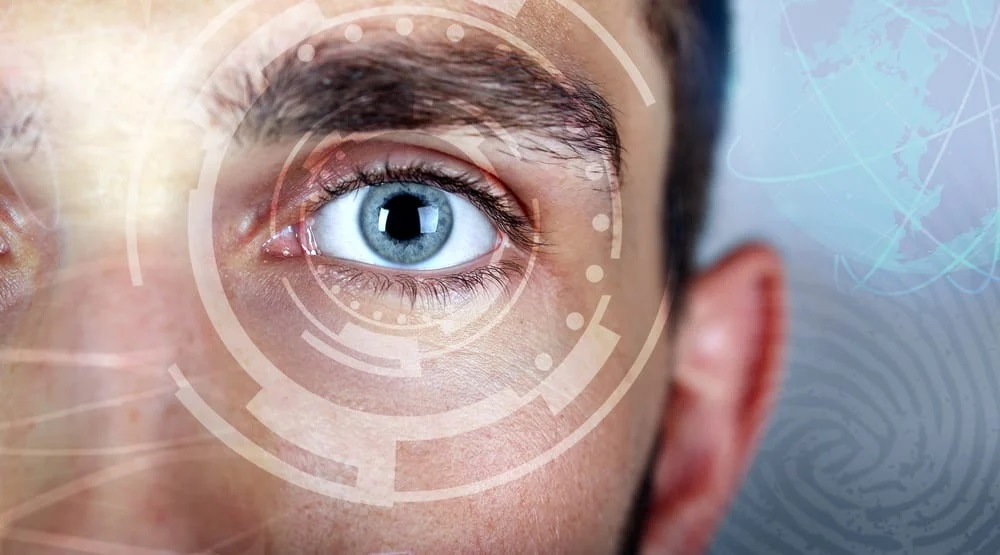
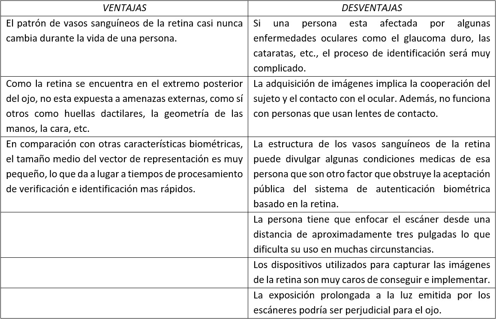

Escaneo de retina
Método de autenticación biométrica

· Introducción
La retina es la parte neural del ojo responsable de la visión. El patrón de los vasos sanguíneos que sirven a la retina es tan único como una huella digital. La tecnología que escanea la retina se conoce como escaneo retinal. El verdadero objetivo de la exploración es el patrón capilar en la retina. El proceso se basa en generar imágenes de la retina usando una fuente de luz de baja intensidad. No hay que confundirlo con el escaneo del iris.
· Inicios
La singularidad del patrón vascular de la retina fue introducida por dos oftalmólogos, el Dr. Carleton Simon y el Dr. Isodore Goldstein en 1935. Más adelante en 1950, el Dr. Paul Tower descubrió que incluso entre gemelos idénticos los patrones vasculares son únicos. Pero la tecnología utilizada para explotar esta información se desarrolló más tarde. Aunque el uso militar y de alta seguridad de las exploraciones fotográficas de la retina comenzó décadas antes, para 1985, la tecnología de exploración de la retina se puso a disposición para la identificación biométrica computarizada y el uso comercial de seguridad.
· Procedimientos
Los escáneres de retina se basan en la presencia de la fina red de capilares que suministran a la retina oxígeno y nutrientes. Estos vasos absorben la luz y pueden ser fácilmente visualizados con la iluminación adecuada. Los escaneos de retina requieren un contacto cercano entre el usuario y el escáner, una alineación perfecta del ojo con el escáner y ningún movimiento del ojo. El examinador debe mantener el ojo del sujeto a menos de media pulgada del instrumento. El sujeto debe enfocar un punto de luz verde pequeño (para alinear correctamente el ojo) y evitar el parpadeo. A continuación, se transmite una luz coherente de baja intensidad a través del ojo y la imagen reflejada del patrón capilar de la retina es registrada por la computadora.Los patrones retinianos pueden cambiar en caso de diabetes, glaucoma, trastornos degenerativos de la retina o cataratas. Por lo tanto, aunque los escáneres de retina tienen una precisión de casi el 100%, no pueden utilizarse como medida de seguridad universal sin tener en cuenta los cambios normales. Un escaneo inicial (inscripción) toma un mínimo de cinco escaneos y dura aproximadamente 45 segundos; los escaneos de autentificación subsiguientes son más rápidos y toman sólo 10-15 segundos.
· Métodos de autenticación
Un sistema de autenticación de la retina tiene básicamente tres pasos principales: adquisición de imágenes, extracción de características y coincidencia de características. La primera etapa de un sistema de autenticación de la retina es la adquisición de imágenes. Como mencionamos anteriormente, para capturar la imagen de la retina se utiliza una cámara de fondo, en la que el usuario debe colocar su ojo muy cerca del cristalino y también debe permanecer perfectamente quieto en este punto. Además, si la persona lleva gafas, éstas deben quitarse para evitar interferencias en la señal. La segunda etapa es la extracción de las características. Se extraen diferentes características de la estructura de los vasos sanguíneos de la imagen de la retina, y/o de la propia imagen de la retina. Estas características son únicas para cada individuo y se almacenan como un patrón de referencia.Los procedimientos de autenticación basados en la retina pueden clasificarse a grandes rasgos en dos categorías diferentes. Pocos algoritmos dependen de las características vasculares de las imágenes de la retina. Estos procesos requieren la segmentación de los vasos sanguíneos, lo que lleva mucho tiempo. Por lo tanto, el tiempo de cálculo de estos métodos es alto. A continuación, se enumeran las diferentes características de los vasos sanguíneos:
Un sistema de autenticación de la retina tiene básicamente tres pasos principales: adquisición de imágenes, extracción de características y coincidencia de características. La primera etapa de un sistema de autenticación de la retina es la adquisición de imágenes. Como mencionamos anteriormente, para capturar la imagen de la retina se utiliza una cámara de fondo, en la que el usuario debe colocar su ojo muy cerca del cristalino y también debe permanecer perfectamente quieto en este punto. Además, si la persona lleva gafas, éstas deben quitarse para evitar interferencias en la señal. La segunda etapa es la extracción de las características. Se extraen diferentes características de la estructura de los vasos sanguíneos de la imagen de la retina, y/o de la propia imagen de la retina. Estas características son únicas para cada individuo y se almacenan como un patrón de referencia.
Los procedimientos de autenticación basados en la retina pueden clasificarse a grandes rasgos en dos categorías diferentes. Pocos algoritmos dependen de las características vasculares de las imágenes de la retina. Estos procesos requieren la segmentación de los vasos sanguíneos, lo que lleva mucho tiempo. Por lo tanto, el tiempo de cálculo de estos métodos es alto. A continuación, se enumeran las diferentes características de los vasos sanguíneos:
• Punto de ramificación: la estructura vascular de la imagen de la retina tiene forma de árbol. Por lo tanto, las principales características del patrón de los vasos sanguíneos son el punto de ramificación donde un vaso se bifurcó en dos ramas de vasos.
• Punto final: los puntos finales de los patrones de los vasos sanguíneos, donde termina cada vaso, se consideran como otra característica para el sistema de autenticación basado en la retina.
• Punto de cruce: los puntos de intersección entre dos vasos sanguíneos se denominan puntos de cruce y se consideran como otro conjunto de características.
• Vasos sanguíneos en y alrededor del disco óptico: los patrones de los vasos sanguíneos alrededor de la región del disco óptico también se consideran un conjunto de características debido a su estabilidad y a la variación única dentro de esa región para una persona en particular.
Sin embargo, algunos otros algoritmos se basan en características no vasculares extraídas de imágenes de la retina. Son características estructurales de la imagen de la retina como la luminancia, el contraste y la estructura. Algún algoritmo calculó el puntaje de disimilitud del borde de la retina para la autenticación. Mientras que otros usaron la transformación de Fourier de la imagen de la retina para extraer el rasgo de fase de espectro de Fourier (FSPF). Los bordes de la imagen de la retina también se consideran como una de las características. El tiempo de implementación de estos métodos es bajo, ya que este algoritmo no requiere la segmentación de los vasos sanguíneos para la extracción de la característica.
· Escáneres
La tecnología de los escáneres de retina ha cambiado en los últimos años. Los grandes dispositivos iniciales están siendo reemplazados por instrumentos más pequeños y precisos. El primer escáner de retina comercial fue desarrollado por EyeDentify en 1984 con el lanzamiento de la unidad de identificación personal Eyedentification 7.5. Uno de los desarrollos más recientes en el área es un pequeño escáner de retina móvil y fácil de usar desarrollado por Retinal Technologies de Boston. Aunque inicialmente se desarrolló con fines de diagnóstico, también estará disponible como herramienta de seguridad.Engañar al escáner de retina es muy difícil, ya que requieren retinas intactas para completar el escaneo. Después de la muerte, la retina se degrada muy rápidamente y por lo tanto no puede ser utilizada en la mayoría de los casos para una identificación post-mortem precisa.
Aunque a menudo es un efecto especial popular en las películas, el uso de una retina desprendida de un cadáver no pasaría desapercibido por el equipo de escaneo moderno. Asimismo, la alteración quirúrgica del patrón retiniano no sólo sería un proceso peligroso y sumamente costoso, sino que los cambios introducidos serían fácilmente detectados por el equipo de escaneo moderno.
· Cómo funciona
Un escáner de retina usa luz infrarroja para hacer mapas. Cuando una persona mira por el ocular, un haz invisible de luz infrarroja de baja energía traza un camino circular en la retina en la parte posterior del ojo. Los capilares llenos de sangre absorben más luz infrarroja que el tejido circundante. Debido a esto, hay una variación en la intensidad del reflejo. El escáner mide este reflejo en 320 puntos a lo largo de la trayectoria del rayo. Luego asigna un grado de intensidad entre cero y 4.095. Los números resultantes se comprimen en un código de computadora de 80 bytes. Este código puede ser comparado con los patrones que ya han sido introducidos en la base de datos de la computadora.
· Usos en seguridad
Las técnicas biométricas se utilizan en la identificación y la autenticación. Las características utilizadas para los dos procesos pueden superponerse o pueden ser diferentes.La autenticación requiere una gran precisión para garantizar un acceso restringido. Los escaneos de retina ofrecen una gran precisión, y los principales usuarios son las instalaciones militares y gubernamentales, como la CIA, el FBI y la NASA. Los escaneos se usan para controlar el acceso a áreas de alta seguridad. La tecnología se está extendiendo actualmente más allá de estas instituciones y está siendo utilizada por la Prisión del Condado de Cook en Illinois (para asegurar la identidad de los prisioneros) así como por General Dynamics (un contratista de defensa). Algunos de los bancos japoneses utilizan escáneres de retina en los cajeros automáticos para evitar el uso no autorizado del sistema. Los ensayos en los EE.UU. con la seguridad biométrica de los cajeros automáticos están usando sistemas de reconocimiento de iris en su lugar. Sin embargo, en Illinois los escaneos de retina junto con las huellas dactilares se usan para prevenir el fraude.
Otros lugares con zonas de acceso restringido, incluidos los aeropuertos, han adquirido tecnologías de escaneo a raíz de los ataques terroristas del 11 de septiembre de 2001 en los Estados Unidos. Recientemente (2004) se instalaron sistemas de tecnología de escaneo en Charlotte (Carolina del Norte), Ámsterdam (Países Bajos) y Frankfurt (Alemania), principalmente con fines de seguridad, para controlar a los empleados y proporcionar un acceso controlado a las zonas de seguridad de los aeropuertos. Se están realizando estudios para comprobar si las tecnologías de escaneado pueden utilizarse para facilitar el control rápido y agilizar el cruce de fronteras. Es importante aclarar que muchas veces el escaneo de iris es elegido en lugar del escaneo de retina, como en el aeropuerto Schipol de Ámsterdam, que es uno de los aeropuertos más recientes en los que se ha probado el sistema de reconocimiento del iris. Los detalles del iris de un individuo se almacenan en una tarjeta especial y un control posterior se realiza mediante un simple escaneo del iris para confirmar la identidad. Ocho de los mayores aeropuertos canadienses (Toronto, Vancouver, Ottawa, Montreal, Halifax, Winnipeg, Calgary y Edmonton) tienen previsto instalar sistemas similares para finales de 2003.

· Comentarios de cierre
Entre todos los demás rasgos biométricos, la retina es la característica más estable para la autenticación de una persona debido a la singularidad del patrón de los vasos sanguíneos y a su coherencia durante la vida. De diferentes estudios se desprende que las pautas de los vasos sanguíneos son la base del reconocimiento de la retina, por lo que es importante segmentarla con precisión. La mayoría de los autores utilizaron el punto de bifurcación y el punto final como vector de características. En el futuro, deberán desarrollarse tecnologías que funcione en personas con ciertas enfermedades mencionadas y superar limitaciones como no funcionar con lentes de contacto. La principal dificultad en el sistema de autenticación basado en la retina es el movimiento de la cabeza o el ojo frente al escáner de retina. Por lo tanto, para que el sistema sea más robusto debe tolerar la escala, la rotación y la traducción para una identificación precisa. También es necesario optimizar el tiempo de procesamiento para acelerar el proceso y convertirlo en un sistema de identificación biométrica en tiempo real de alta seguridad.· FUENTES
[1] R. B. Hill, “Retina identification,” Biometrics, pp. 123–141, 2002.
[2] R. Das, “Retinal recognition: Biometric technology in practice,” Keesing Journal of Documents & Identity, vol. 22, pp. 11–14, 2007.
[3] M. Ortega, M. G. Penedo, J. Rouco, N. Barreira, y M. J. Carreira, “Personal verification based on extraction and characterisation of retinal feadture points,” Journal of Visual Languages & Computing, vol. 20, no. 2, pp. 80–90, 2009.
[4] M. Ortega, C. Marino, M. Penedo, M. Blanco, y F. Gonzalez, “Biometric authentication using digital retinal images,” en Proceedings of the 5th WSEAS international conference on Applied computer science, pp. 422–427, 2006.
[5] B. K. Ekka, N. Puhan, y R. Panda, “Retinal verification using point set matching,” en Signal Processing and Integrated Networks (SPIN), 2015 2nd International Conference on, pp. 159–163, IEEE, 2015.
[6] K. Lee Lerner y Brenda Wilmoth Lerner, “Encyclopedia of espionage, intelligence and security”, 1era edición, 2003.
[7] Jarina B. Mazumdar, S. R. Nirmala, “Retina based biometric authentication system: a review” en International Journal of Advanced Research in Computer Science Vol.9 Nº1, 1/2-2018.